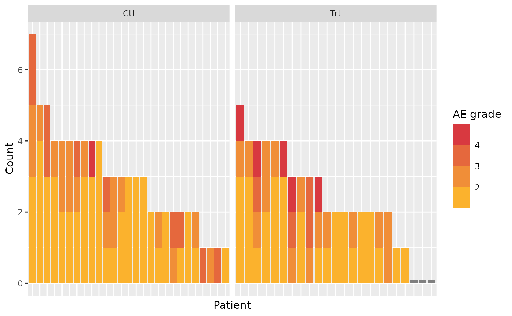
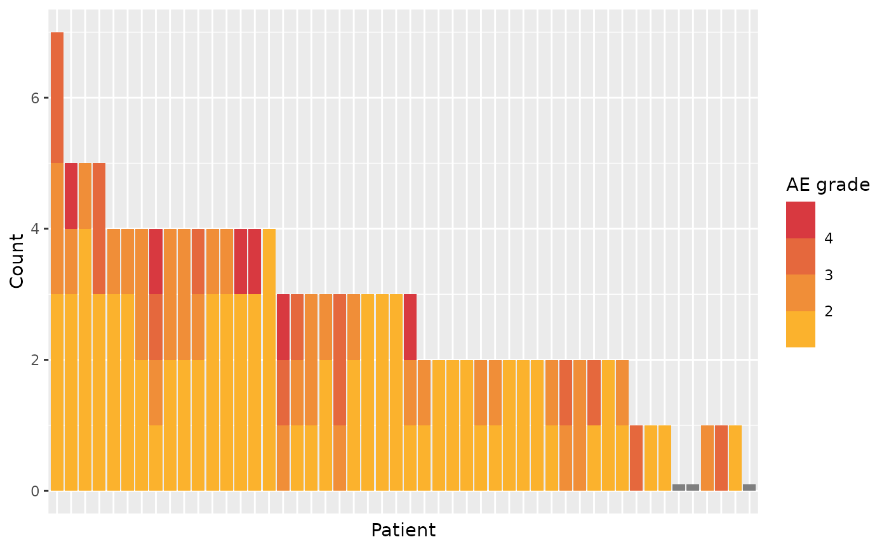

Produce a graphic representation of AE, counting AE as bars for each patient, colored by grade. Can be faceted by treatment arm.
Usage
ae_plot_grade_n(
df_ae,
...,
df_enrol,
low = "#ffc425",
high = "#d11141",
arm = "ARM",
grade = "AEGR",
subjid = "SUBJID"
)Arguments
- df_ae
adverse event table, one row per AE, containing subjid, soc, and grade
- ...
unused
- df_enrol
enrollment table, one row per patient, containing subjid (and arm if needed)
- low
the color of Grade 1 AE
- high
the color of Grade 5 AE
- arm
name of the treatment column in
df_enrol. Case-insensitive. Can be set toNULLto not group.- grade
name of the AE grade column in
df_ae. Case-insensitive.- subjid
name of the patient ID in both
df_aeanddf_enrol. Case-insensitive.
See also
ae_table_grade_max(), ae_table_grade_n(), ae_table_soc(), ae_plot_grade_max(), ae_plot_grade_n()
Examples
tm = edc_example_ae()
#> Warning: Option "edc_lookup" has been overwritten.
ae_plot_grade_n(df_ae=tm$ae, df_enrol=tm$enrolres)

ae_plot_grade_n(df_ae=tm$ae, df_enrol=tm$enrolres, arm=NULL)
